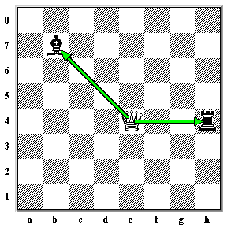

A Rainha é a peça mais poderosa do tabuleiro. Isso ocorre porque ela pode controlar mais casas do que qualquer outra. Ela se move para frente ou para trás e na diagonal qualquer número de quadrados. Na imagem abaixo, a Rainha pode mover-se para qualquer uma das casas destacadas.

No entanto, como todas as outras peças mencionadas até agora, o caminho da Rainha pode ser bloqueado por outras peças.

Na imagem abaixo, a Rainha pode capturar o Bispo ou a Torre.
